Chaque rareté a son propre dessin, ses gravures et ses reliefs, pas seulement une couleur. Tous les premiers essais et les originaux historiques sont conservés. Galerie de l’essai 01
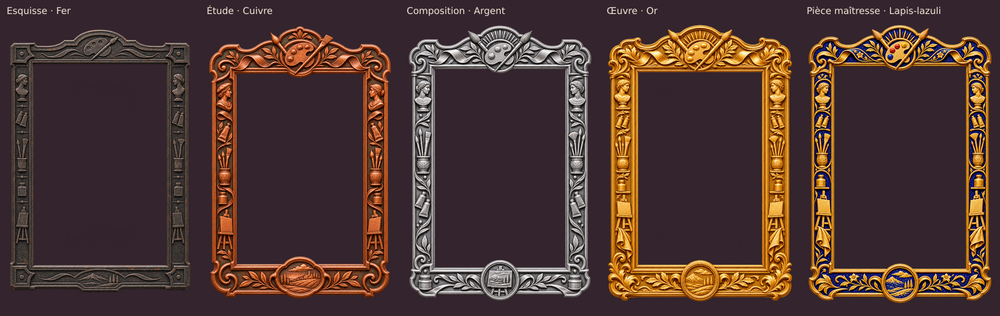
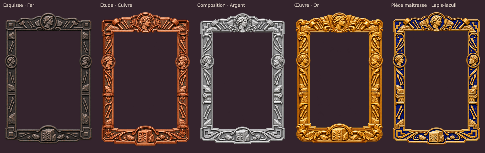
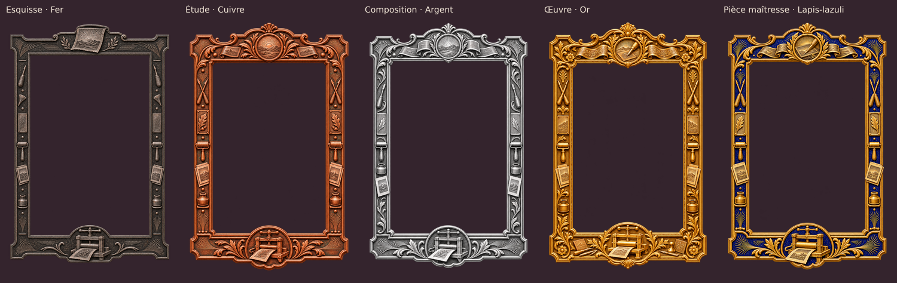
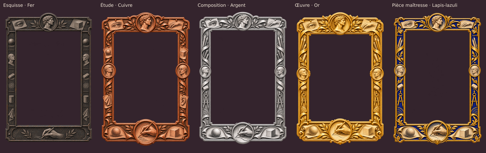
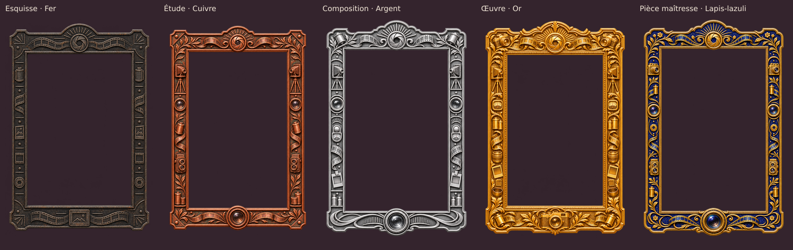
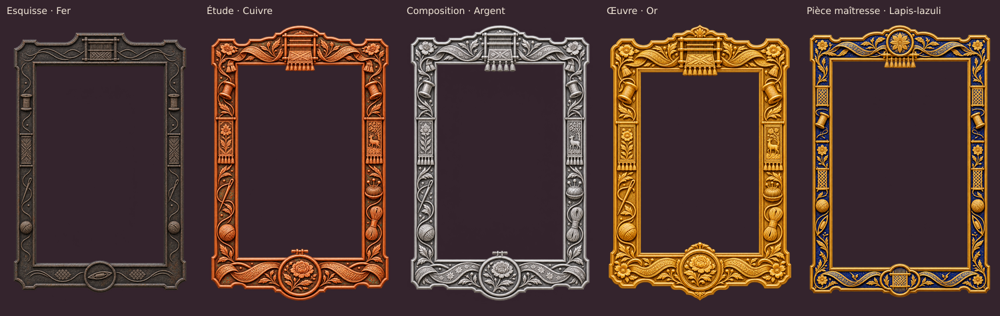
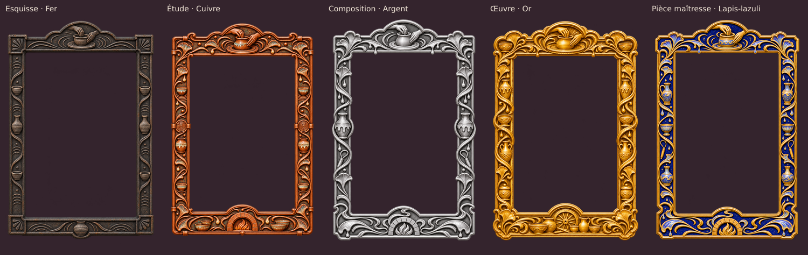
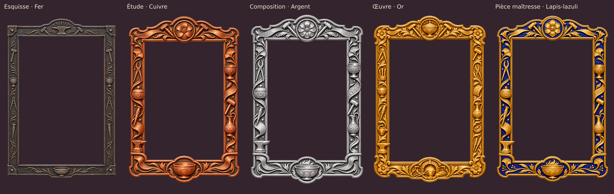
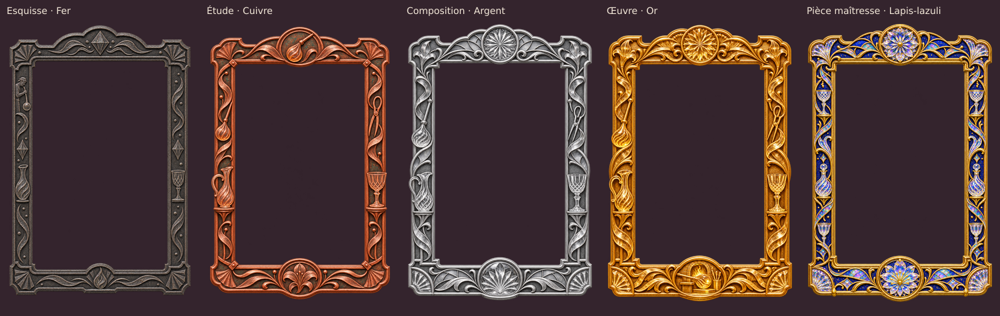
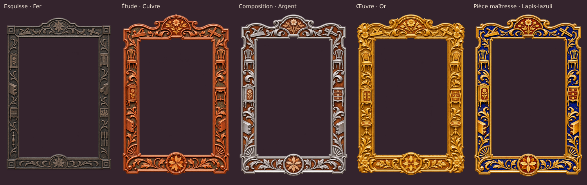
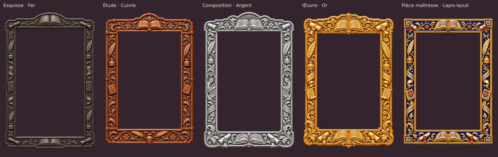
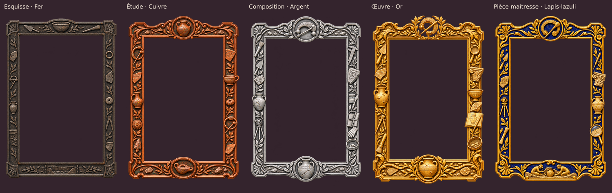
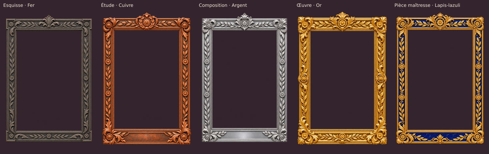
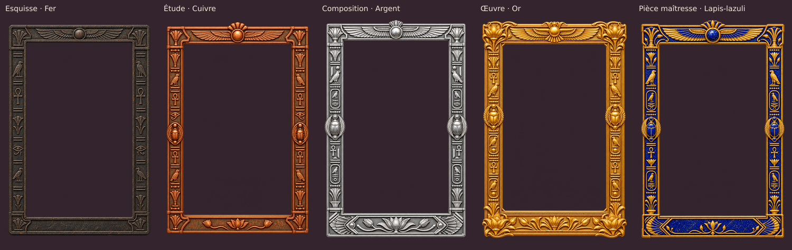
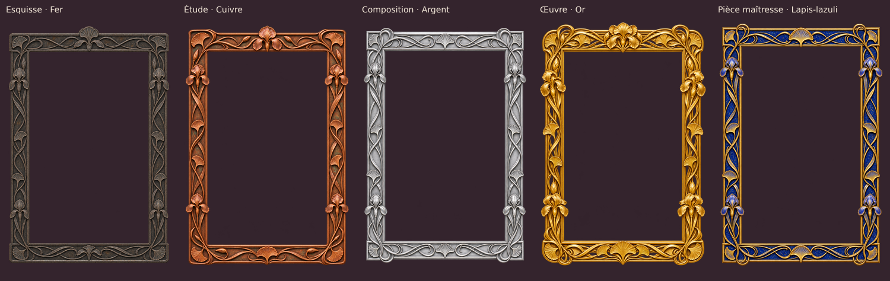
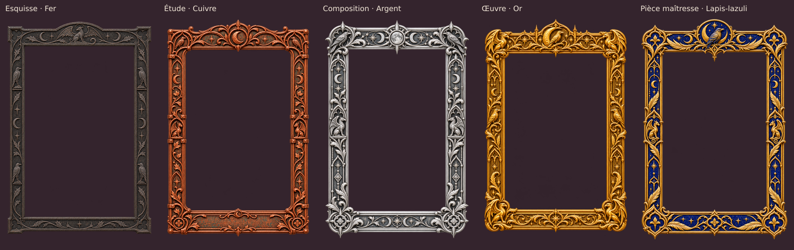
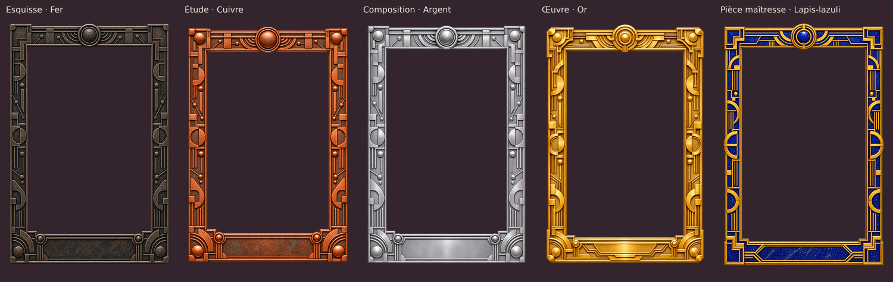
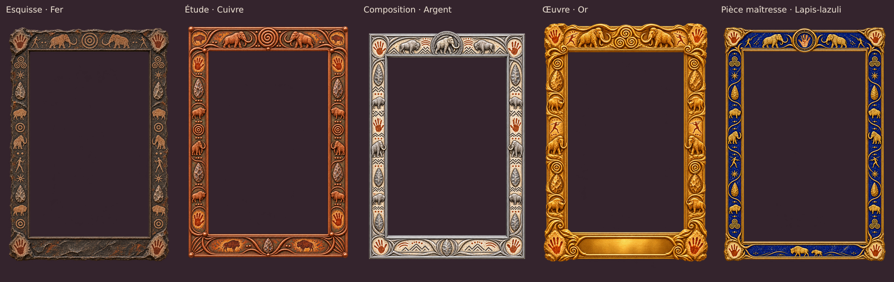
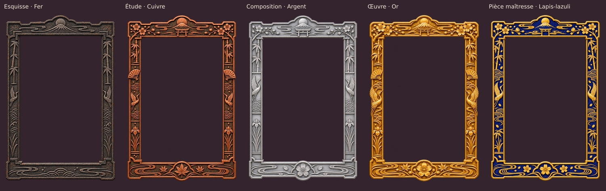